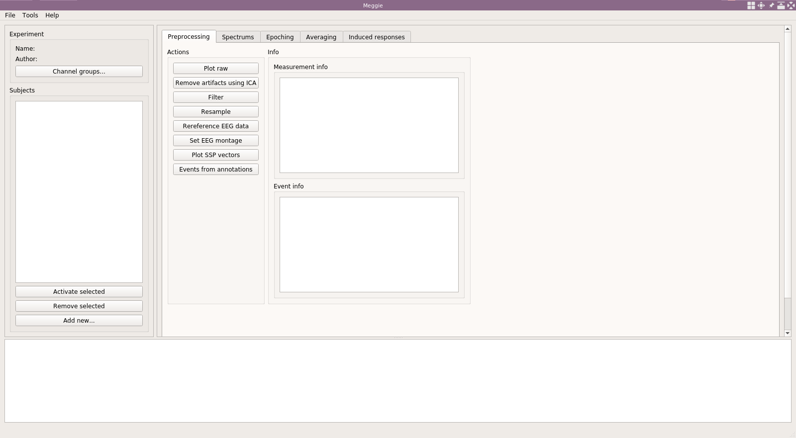

Meggie is an open source software for running MEG and EEG analysis with easy-to-use graphical user interface. It is written in Python and uses MNE-python library under the hood to do heavy lifting. The project was started in XXXX in University of Jyväskylä and has been used in-house since the early days, but has been released to public only lately.
There are other software that can be used for M/EEG analysis. Most popular at the time of writing seem to be Fieldtrip based on Matlab language, and MNE-python based on python language. Both of these software have a great variety of analysis methods to offer and are most often used by user writing a python/matlab script in which the functions provided by the packages are called. This way user can give the raw data measured with M/EEG devices to the script, script runs a series of analysis steps, perhaps including preprocessing, epoching, averaging, and plotting, and then outputs the result.
This is not always easy for researcher not familiar with programming. To mention one other matlab package, EEGLab, which made the usage easy. Community moving the python, only EEG?
There is also mnelab which is also based on mne-python. Meggie is not designed to compete with mnelab, which seems to work a bit like ...elekta?, that is, it is great for inspecting data for single subjects, but not necessarily for running multiple subsequent steps of analysis in a experiment with tens of subjects.
And that is what Meggie is designed to do in very easy-to-use way, with great extendability as in EEGLab.

Fig 1. A view of the main window when starting Meggie first time.
Features
Some of the basic features of Meggie are explained below.
Overview
Overview.. here put a picture with red rectangles and med eeg subjects loaded.
Analysis
Data import, preprocessing (all steps), spectrums, epochs, evoked, TFR's, output as plots and csv's. Pictures?
Batching
Most of the actions (that do not need require supervision) can be run simulatenously for multiple subjects.
Plugins
The core functionality is carefully designed and tested. However, it there are great avenues to where extend. Meggie includes a very simple to use plugin architecture.
Tutorials
Simple multi-subject analysis with EEG resting state data